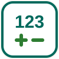

Calculia
Una app de
Apptonomia
.
Hola. ¿Qué quieres practicar hoy?
⭐ 0
Matemáticas
🔢
Positivos y negativos
Teoría, termómetro y ascensor.
🏛️
Números Romanos
Aprende a reconocer los siglos.
🔷
Formas
Círculos, cuadrados y cuerpos.